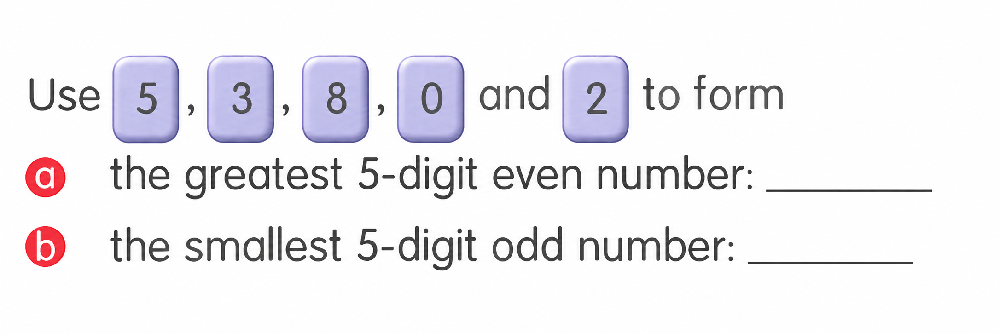
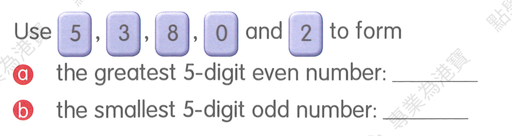
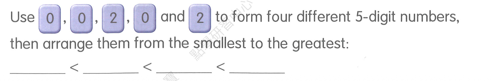
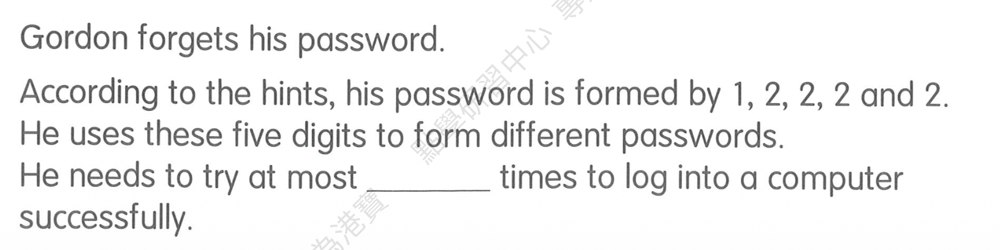
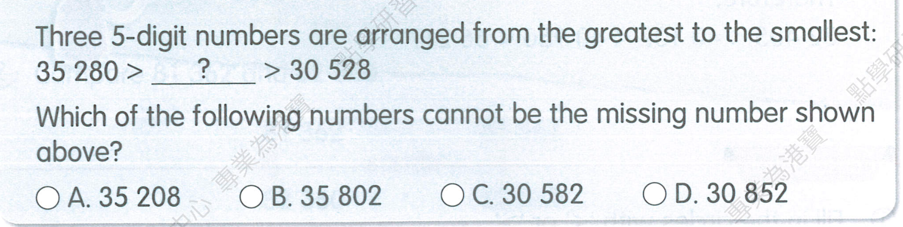
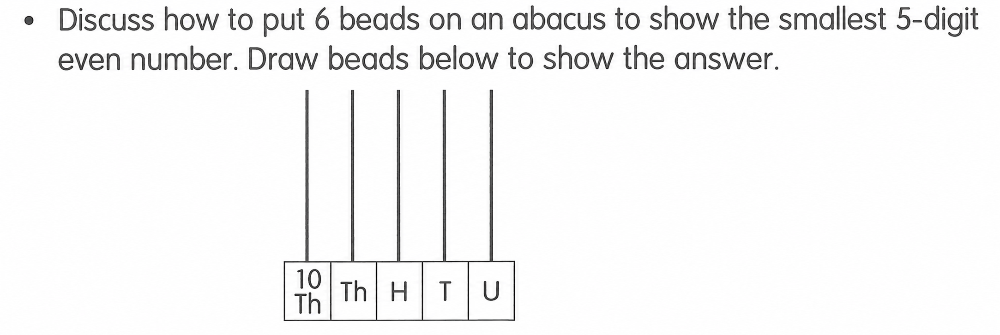
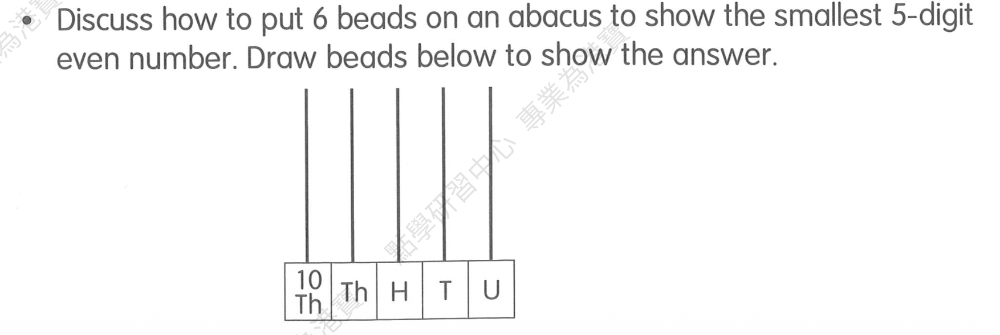

三年级 / Unit 1 五位数 / 组数：最大偶数与最小奇数
MA-G3-2026-09-20-001 · 待抽取
查看答案与老师原图
(a) 85320; (b) 20385
每张数字卡用一次。最大偶数按降序排列且个位为偶数，得 85320；最小奇数为 20385。原文答案 81320 含题目没有的数字 1，已纠正。

每日随机抽 3 道，抽中即出库，抽完自动开始新一轮，不看批改结果；抽完全部重新入池，同日不重复。第 2 轮，共 6 组，待练 6 组，已抽取 0 组。

(a) 85320; (b) 20385
每张数字卡用一次。最大偶数按降序排列且个位为偶数，得 85320；最小奇数为 20385。原文答案 81320 含题目没有的数字 1，已纠正。


20002 < 20020 < 20200 < 22000
首位必须为 2，另一张 2 分别在个位、十位、百位、千位，得到四种数。


(a) 30468; (b) 86403
最小数首位取最小非零数字 3，其余升序；最大奇数个位只能为 3，其余降序。


5
数字 1 可在五个不同位置；其余均为 2，故共 5 个不同密码。


B. 35 802
35802 大于上限 35280，不能填入；A、C、D 均在两端之间。原文答案 C 已纠正为 B。


10014: 10 Th = 1, Th = 0, H = 0, T = 1, U = 4
万位至少 1 颗；余下 5 颗尽量放低位且个位须为偶数，因此十位 1 颗、个位 4 颗，共 6 颗，数为 10014。
